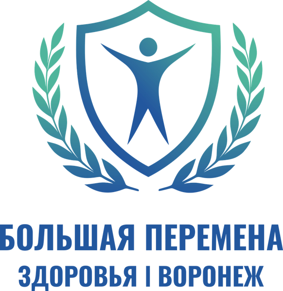

Межведомственный проект · с 2024 года
«Большая перемена здоровья»
Профилактика школьно-обусловленных заболеваний в школах Воронежской области: зрение, осанка, вес и репродуктивное здоровье подростков.

Блок 1
О программе
Межведомственный проект реализуется в школах Воронежской области с 2024 года. Его ведут министерства здравоохранения, образования, физической культуры и спорта Воронежской области и Управление образования и молодёжной политики администрации Воронежа. Главная задача — не допустить появления и развития заболеваний у школьников.
Направления проекта
Цели направления «Зрение»
- Предупредить развитие близорукости у школьников с нормальным зрением.
- Выявлять детей группы риска на ранней стадии — по предикторам миопии. Самый критичный возраст — 7–15 лет.
- Вовлечь родителей: нарушения зрения можно избежать, если соблюдать простые рекомендации.
Как проходит скрининг
- Анкетирование и тестирование детей с хорошим зрением в школах Воронежа.
- Заполнение медработником школы «Карты предикторов миопии».
- Передача заполненной карты родителям.
- Маршрутизация: 1–2 уровень риска — рекомендации на сайте, 3 уровень — визит к офтальмологу.
- Обучение гимнастике для глаз и упражнению «Метка на стекле».
Хронология проекта
⚠ Подтверждены старт в 2024 году и график 2026/2027. Промежуточные этапы уточнить у координаторов.
- Старт проектаМинздрав, Минобразования, Минспорт области и Управление образования Воронежа запускают проект в школах.
- Скрининг в школахОбследования по четырём направлениям; для зрения — выявление предикторов миопии.
- Итоги в СМИОфтальмологи рассказывают о росте числа школьников с риском миопии.
- Скрининг 2026/2027Новый учебный год: первыми обследуются дети 8 лет.
- Отчёт за годПодведение итогов скрининга по графику.
График скрининга детей с хорошим зрением, 2026/2027 учебный год
| Возраст | Окт | Ноя | Дек | Янв | Фев | Мар | Апр | Май |
|---|---|---|---|---|---|---|---|---|
| 8 лет | ||||||||
| 9 лет | ||||||||
| 11 лет | ||||||||
| 12 лет | ||||||||
| 13 лет | отчёт |
Блок 2
Новости БПЗ
Заголовки публикаций о проекте. Карточка ведёт на источник.
Блок 3
Аналитика скрининга
⚠ Демо-данные: открытой статистики проекта нет. Заменить на данные координаторов.
Охват по возрастам
обследовано / план, человек
Распределение по группам риска
среди обследованных детей
Частота факторов риска
доля детей, у которых отмечен фактор (по «Карте предикторов»)